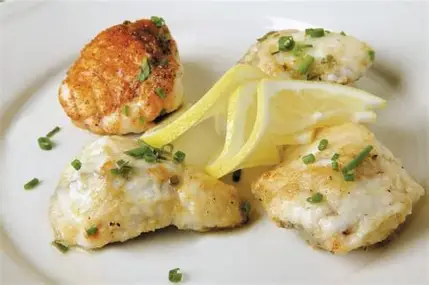

Ingredients
- 4 boneless monkfish medallions, about 140 g / 5 oz each
- 1 stalk lemongrass, bashed and finely chopped
- 4 lime leaves, chopped
- 1 teaspoon lemon thyme leaves
- 5 tablespoons extra virgin olive oil, plus extra for frying
- A handful of wild rocket (arugula) leaves, to serve
- Strips of zest from 2 lemons (pith removed)
- 25 g caster sugar
- 6 tablespoons extra virgin olive oil
- 2 teaspoons lemon juice
- ½ teaspoon coriander seeds, toasted then ground
- ½ teaspoon black onion seeds
- 2 tablespoons currants
- 4 tablespoons whole blanched almonds
- 2 tablespoons roughly chopped coriander (fresh)